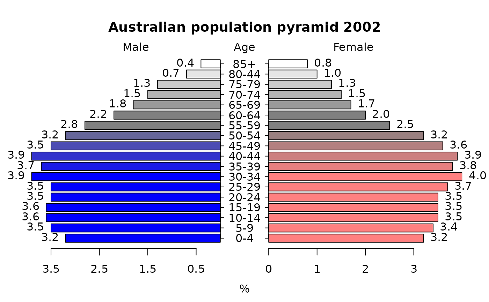

Pyramid plot
pyramid.plot.RdDisplays a pyramid (opposed horizontal bar) plot on the current graphics device.
Arguments
- lx,rx
Vectors or a matrix or data frame (see Details) which should be of equal length.
- labels
Labels for the categories represented by each pair of bars. There should be a label for each lx or rx value, even if empty. If labels is a matrix or data frame, the first two columns will be used for the left and right category labels respectively.
- top.labels
The two categories represented on the left and right sides of the plot and a heading for the labels in the center.
- main
Optional title for the plot.
- laxlab
Optional labels for the left x axis ticks.
- raxlab
Optional labels for the right x axis ticks.
- unit
The label for the units of the plot.
- lxcol,rxcol
Color(s) for the left and right sets of bars. Both of these default to rainbow(length(labels)).
- gap
One half of the space between the two sets of bars for the labels in user units.
- space
Space between the bars. Should be 0 <= space < 1.
- ppmar
Margins for the plot (see Details).
- labelcex
Expansion for the category labels.
- add
Whether to add bars to an existing plot. Usually this involves overplotting a second set of bars, perhaps transparent.
- xlim
Optional x limit for the plot (see Details).
- show.values
Whether to display lx and rx at the ends of the bars.
- ndig
The number of digits to round the values if displayed.
- do.first
Optional expression to evaluate before displaying anything.
Details
pyramid.plot is principally intended for population pyramids, although it can display other types of opposed bar charts with suitable modification of the arguments. If the user wants a different unit for the display, just change unit accordingly. The default gap of two units is usually satisfactory for the four to six percent range of most bars on population pyramids. If labels is a matrix or data frame of at least two columns, the first column will be displayed on the on the left side of the gap in the center, and the second on the right. This will almost always require increasing the gap width and perhaps also specifying a wider plotting device. Displaying the values will usually require increasing the left and/or right margins of the plot, or setting xlim larger than the largest value.
If a gap width of zero is passed, the category labels will be displayed at the left and right extents of the plot. This usually requires setting xlim to values larger than the maximum extent of lx and rx. The user can pass two different values to xlim, but this is almost always a bad idea, as the lengths of the bars will not be in the same proportion to the values on the left and right sides. Both the bars and category labels are vertically centered on integer values, allowing the user to easily add components to the plot.
lx and rx are the values specifying the left and right extents of the left and right bars respectively. If both are matrices or data frames, pyramid.plot will produce opposed stacked bars with the first columns innermost. In this mode, colors are limited to one per column. The stacked bar mode will in general not work with the add method or with a gap of zero. Note that the stacked bar mode can get very messy very quickly.
The add argument allows one or more sets of bars to be plotted on an existing plot. If these are not transparent, any bar that is shorter than the bar that overplots it will disappear. Only some graphic devices (e.g. pdf) will handle transparency.
In order to add bars, the function cannot restore the initial margin values or the new bars will not plot properly. To automatically restore the plot margins, call the function as in the example.
Author
Jim Lemon (thanks to Susumu Tanimura for the patch that omits ticks for NA values in vector input and Igor Rebeiro for the space argument)
Examples
xy.pop<-c(3.2,3.5,3.6,3.6,3.5,3.5,3.9,3.7,3.9,3.5,3.2,2.8,2.2,1.8,
1.5,1.3,0.7,0.4)
xx.pop<-c(3.2,3.4,3.5,3.5,3.5,3.7,4,3.8,3.9,3.6,3.2,2.5,2,1.7,1.5,
1.3,1,0.8)
agelabels<-c("0-4","5-9","10-14","15-19","20-24","25-29","30-34",
"35-39","40-44","45-49","50-54","55-59","60-64","65-69","70-74",
"75-79","80-44","85+")
mcol<-color.gradient(c(0,0,0.5,1),c(0,0,0.5,1),c(1,1,0.5,1),18)
fcol<-color.gradient(c(1,1,0.5,1),c(0.5,0.5,0.5,1),c(0.5,0.5,0.5,1),18)
par(mar=pyramid.plot(xy.pop,xx.pop,labels=agelabels,
main="Australian population pyramid 2002",lxcol=mcol,rxcol=fcol,
gap=0.5,show.values=TRUE))

#> 4 4
# three column matrices
avtemp<-c(seq(11,2,by=-1),rep(2:6,each=2),seq(11,2,by=-1))
malecook<-matrix(avtemp+sample(-2:2,30,TRUE),ncol=3)
femalecook<-matrix(avtemp+sample(-2:2,30,TRUE),ncol=3)
# group by age
agegrps<-c("0-10","11-20","21-30","31-40","41-50","51-60",
"61-70","71-80","81-90","91+")
oldmar<-pyramid.plot(malecook,femalecook,labels=agegrps,
unit="Bowls per month",lxcol=c("#ff0000","#eeee88","#0000ff"),
rxcol=c("#ff0000","#eeee88","#0000ff"),laxlab=c(0,10,20,30),
raxlab=c(0,10,20,30),top.labels=c("Males","Age","Females"),gap=4,
do.first="plot_bg(\"#eedd55\")")
#> 30 30
# put a box around it
box()
# give it a title
mtext("Porridge temperature by age and sex of bear",3,2,cex=1.5)
# stick in a legend
legend(par("usr")[1],11,c("Too hot","Just right","Too cold"),
fill=c("#ff0000","#eeee88","#0000ff"))
 # don't forget to restore the margins and background
par(mar=oldmar,bg="transparent")
# don't forget to restore the margins and background
par(mar=oldmar,bg="transparent")